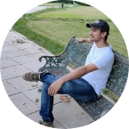

|  |
Ashok GorliCSWE and Product Design Engineer at Kmedika I Love astronomy and Mad at physics May the force be with you |
To become a professional Mechanical Engineer in the field of Product Designing and in FEA Simulations by serving the organization with my Technical knowledge, Tool Skills and Discipline.
3 years’ Experience in Both in Design and FEA Simulations.
Working as Product Design Engineer at Kmedika where my job Role is to develop surgical concepts with new mechanisms and then Design product using Solidworks
I make drawings with properly applied GD&T. I also Run simulations Using ANSYS to check its real time working performance and generate reports to get FDA approval.
| Degree/Certificate | University / Board | Year | CGPA /Percentage |
|---|---|---|---|
| B.TECH ME(Hons) | Lovely Professional University, Phagwara | 2016 | 7.18 |
| BIE | Sri Chaitanya junior college / Board of Intermediate Education, Andhra Pradesh | 2012 | 84% |
| SSC | Z.P Boys High School, Madugula / Board of Secondary Education, Andhra Pradesh | 2010 | 89% |
| Dates | Work | company |
|---|---|---|
| 2017-Present | Sr.Product Desing Engineer | Kmedika |
| Solidworks | ⭐⭐⭐⭐⭐ |
| Ansys | ⭐⭐⭐⭐⭐ |
| Spaceclaim | ⭐⭐⭐ |
| Hypermesh | ⭐⭐⭐ |
| ABAQUS | ⭐⭐⭐ |
| GD&T | ⭐⭐⭐⭐⭐ |
| C | ⭐⭐⭐ |
| Java (J2SE and J2EE) | ⭐⭐⭐⭐⭐ |
| SQL | ⭐⭐⭐ |
| Python | ⭐⭐⭐ |
| MATLAB(GUI,Simulink) | ⭐⭐⭐⭐⭐ |
| HTML | ⭐⭐⭐⭐⭐ |
| CSS | ⭐⭐⭐⭐⭐ |
| JavaScript | ⭐⭐⭐⭐⭐ |
| Organization | Description |
|---|---|
| ELEATION (Element simulation Academy) | I have completed Hyper Works level-1 and HyperWorks level-2 courses and ANSYS level 1 and ANSYS level 2 courses submitted all home works and practice models. |
| Logical solutions, Hyderabad | I have completed DraftSight and SolidWorks Essential training and submitted project on Gas cylinder design and drawing sheets. |
| Project | Objective | Description | Role |
|---|---|---|---|
| Knee prosthesis Blue Implants, USA | To develop new bone implants for Total knee replacement and also new mechanism for insertion of implant into knee and also to maintain structural strength |
It involves the design and development of Knee implants and to run linear FEA simulation using Ti6AL4V rapid prototyping material properties to know Fatigue resistance. |
Design and Draft the implants and run linear static analysis on implants using ANSYS and also did fatigue life calculation to find out maximum life for implants. |
| Bone Staple System, USA | To develop new bone implants for midfoot factures and new mechanism for insertion of implant into bone with minimal amount of surgeon effort. |
It involves the design of the mechanisms and to run nonlinear simulation of hyper elastic material Nitinol. |
Design of the mechanism in SolidWorks and Rigid Dynamic analysis and size optimization of staples using ANSYS software to calculate minimum amount of load required to bend staple. |
Utility Plates, TNC plate, Nitinol washer plate, Dynamic Disc, Ankle fusion Plates, advanced foot plating system, Lapidus Plate and Pilon Fracture, USA |
To develop new bone implants for different bone fractures and new mechanism for insertion of implant into bone with minimal amount of surgeon effort. |
It involves the design of the mechanisms and to run FEA simulation. |
Design of the mechanism in SolidWorks and size optimization of plates using ANSYS software to calculate minimum amount of load required to bend staple. |
| Trauma project, RUSSIA | To develop new bone implants for total human body fractures and its instruments. |
It involves the design of the mechanisms and to run FEA simulations on implants using titanium alloys. |
Design of the mechanism in SolidWorks and run FEA analysis and size optimization of implants using ABAQUS software to calculate minimum amount of load required to insert them. |
I have been honoured with CMR PRATIBHA AWARD and AMUL VIDYA SHREE AWARD for getting school first in SSC 2010
| WORKSHOP-1 | I have conducted WORKSHOP for Supra and BAHA Design teams, To Make them aware about how to Design Chassis and how FEA works and How Students need to carryout Front impact, Back impact Side impact and rollover Simulations and How to do geometry clean up to get better mesh quality using and Ansys and Hyper Works Optistruct solver for three days. |
| WORKSHOP-2 | I have conducted WORKSHOP for Go-Cart Student Teams how to Design their vehicle Chassis using Solidworks tool and how to carry out Front Impact and back impact and side impact Simulations using Ansys and Hyper Works Optistruct solver. |
| Certificate | License | year |
|---|---|---|
| CSWE- Expert | License no: C-CYRPCVX9ZH | 2019 |
| CSWA-Additive Manufacturing | License no: C-TVZZ5HT5D3 | 2019 |
| CSWPA-Surfacing | License no: C-6PT8QD3AEX | 2019 |
| CSWPA-Mold Making | License no: C-ZLDENFVKWP | 2019 |
| CSWPA-Weldments | License no: C-6Y2Q4G4E9Z | 2019 |
| CSWPA-Sheet Metal | License no: C-35W6LW9R73 | 2018 |
| CSWPA-Drawing tools | License no: C-9JTQ8A62EA | 2018 |
| Hyper Works course | ELEATION ACADEMY (pune) | 2016 |
| ANSYS Course | ELEATION ACADEMY (pune) | 2016 |
| CSWP- Professional | License no: C-MQVA42CR8K | 2015 |
| SolidWorks Essentials Course | Logical Solutions (Hyderabad) | 2015 |